(This is a placeholder title. Edit away!)
This is an example of a specially styled paragraph.
Hello, dear reader!
This book is a sequel to the first book, ‘Meet Dameo!’ That time we got to know the game, and now we are planning a deeper dive into it.
The idea of the second book is to show the beauty and inexhaustibility of this game, the intentions and plans of the sides, and the originality of the players’ thinking through examples of whole games or long fragments of them. Consistency in carrying out the plans of the players and a vivid battle of minds constitute the beauty of any intellectual game.
It is very difficult to comment on Dameo games because of the huge number of moves and variants. Only a computer program can handle such a massive amount, but we are not going to complain and will try to study and understand this little-explored game more deeply by means of ordinary human manual analysis.
We assume that the reader is already familiar with Dameo’s rules, but we will still briefly describe them. Sufficiently experienced players can skip this description and proceed to the next chapter.
So, the rules of Dameo are to a certain extent the same as the rules of international draughts, but there are three major differences, namely:
- a simple checker moves forward in three directions; a king moves in 8 directions, like a queen in Chess to any available number of cells.
- a simple checker may jump over one or more other checkers of its own colour, provided that the field ahead is free; the king does not participate in a line jump (red arrows below on the diagram).
- all captures in Dameo are straight (orthogonal) only; a simple checker may capture forward, backward, or sideways by the short leap; a king may capture by the long leap.
All three differences are shown in diagrams 1a, 1b and 1c.
The rest of the rules (the rule of majority capture, the rule of Turkish strike) coincide with the rules of international draughts.
1a
1b 
1c 
An important distinguishing feature of Dameo is the fact that two kings always defeat a lone king. Due to this, you will win with even a small advantage. This leads to a high percentage of decisive games compared to international draughts, which tends to draw in high level play. The construction of the winning position is shown in the first book in the chapter ‘Two kings against one’.
Well, that’s the end of the introductory part and let’s move on to the main content.
Beginner_2017 vs Busybee littlegolem.net Tournament: draughts.cv.DAMEO.16.1.1 2023
Games against player Busybee are always difficult but memorable. Busybee is probably the strongest Dameo player but he also has outstanding results in other games. For example, Busybee has a 100% win rate in such complex games as Shogi and Lines of Action. It is always nice to come across something unexplainable and genius, because it is an unforgettable experience for us ordinary people.
Our meeting had everything: a very complex opening, inventive play from both sides, nonobvious mistakes and nonobvious punishment for them, and a cascade of combination hits.
| 1. | e3e4 | g8h7 |
| 2. | g1g3 | h7g6 |
Diagr.1

Black plays ingratiatingly and is not in a hurry. In fact, Busybee made the move g8g6 in two stages. In Chess, such a loss of time often leads to bad consequences in the opening, but Dameo allows you to regulate the pace of your development.
| 3. | d2d4 | g7g5 |
| 4. | e1e3 | d8b6 |
Diagr.2

White also made the move e1e4 in two stages. I just decided to not rush either and see the opponent’s intentions. White builds up its forces in the centre and isn’t afraid of penetration by the opponent on the field h4:
| 4. | … | g5h4 |
| 5. | d1g4 | h4:f4 |
| 6. | f3:f5 | f6:f4 |
| 7. | e4:g4 | … |
Diagr.3

White has a small advantage in development, as well as 6 pieces against 4 on its right flank. Take note that White removed the black checker f6 to avoid the exchange g6g5. In this case Black would have strengthened on the vertical ‘h’. All of the above doesn’t mean that White has a clear advantage, just it would be clear and easy for me to play in such a position. Next, I would plan to accumulate forces on verticals ‘g’ and ‘h’, planning an attack and breakthrough on the right flank. Again I emphasise that Black’s position is quite good, I just like to play with clear guidelines. In this case it is an attack by White’s checkers on the right flank.
Since Busybee refused this variant, I decided to take the h4 field myself.
| 5. | f2h4 | e6f5 |
Diagr.4

Possessing excellent combinational vision, Busybee often gives away the edge vertical, but constructs similar fists of checkers and sets endless traps. Now it is impossible to go to the field h5 due to the uncomplicated strike:
| 6. | h4h5? | f5g4! |
| 7. | h5:f5 | f6:h2 |
| 8. | g3:g7 | f7:h7 |
| 9. | h1:h3 | … |
Diagr.5

Despite the material equality, White’s position is worse due to the weakness of the right flank. Black’s attack on the line ‘h’ is very dangerous.
I decided not to hurry and first closed the field f2.
| 6. | f1f2 | e7e6 |
Diagr.6

The position escalates with each move. Now, when White has already closed the hole f2, I really wanted to play 7.h4h5. Of course, Black has many answers, it’s impossible to consider them all, but from a logical point of view there are two continuations. Let’s consider each of them.
А)
| 7. | h4h5 | g5f4 |
| 8. | e4:g4 | g6g5 |
| 9. | g4:g6 | f6:h4 |
A splinter like that is hard to tolerate, so:
| 10. | g2h3 | h4:h2 |
| 11. | h1:h3 | … |
Diagr.7

During the game I saw this position in my mind and considered it as favourable for White. Why? I thought that I could continue the attack on the right flank by quickly moving forces there (d1g4, f2h4, e2h5). This plan is clear and understandable, so it’s easier to play this way. But Black has a second continuation:
B)
| 7. | h4h5 | g6g4!? |
This answer leads to puzzling complications that are impossible for a human to figure out. Therefore, I didn’t risk going for this continuation against a master of combination play like Busybee. What follows is possible:
| 8. | g3h4 | g5f4!? |
Diagr.8

In this position the variants are useless, because they are inexhaustible. I feared the binding of my centre by b8e5, and the march of my two pieces on the vertical ‘h’ is broken by the h8 piece. I didn’t believe that I would get the king and be able to save it. So I decided to prepare more thoroughly an attack on the right extreme line (back to diagram 6).
Diagr.6
| 7. | g2h3 | f6e5 |
Black still binds White’s centre, but in an unusual way. Obviously, Busybee provokes me, leaving a hole on the f6. But what did he come up with?
| 8. | h3h5 | b6b5?! |
Diagr.9

What? B6b5?? I wasn’t expecting this move at all. I would never have come up with it! Despite the sign ‘?!’, the move b6b5 is absolutely grandiose in its plan, but the problem is that I found an unexpected refutation. What is Black’s plan against the h4h6 attack? Let’s see!
| 9. | h4h6? | f5g4!! |
The white checker moves to d5 directly under the bind.
| 10. | h5:d5 | g4:g2 |
Black knocks out the pillar of White’s position - checker f2.
Diagr.10

Further there are possible insignificant permutations of moves, but we see that after
| 11. | h6:f6 | f7:f5 |
| 12. | f2:h2 | b5c4! |
Diagr.11

Black undermines White’s centre, gets material advantage and a won position. A crazy combination idea! I must confess that during the game I didn’t see any of this, but just believed in my opponent.
Suddenly I saw that instead of a reckless attack I could counter-attack and the hunter would become the fowl! Let’s go back to the diagram 9.
Diagr.9
In Black’s position the dark squares are weakened, and it is possible to use this disadvantage with an oblique hit if there is a confrontation of squares in the centre. But where are the squares? If they are not there, we will create them!
| 9. | f2c5! | b5:d5 |
| 10. | e3c5! | e5:e1 |
| 11. | c5:g7 | g6:g8 |
| 12. | d1:f1 | … |
Diagr.12

Despite the material equality White has an advantage, as Black is behind in development and has no counterplay. Busybee decides to simplify the position by exchanges.
| 12. | … | f5f4 |
| 13. | f3:f5 | g5:e5 |
I didn’t like the active centre piece e5, so I decided to exchange it.
| 14. | b1e4 | e5:e3 |
| 15. | d3:f3 | c8e6 |
Diagr.13

I thought that the advantage in development and the twofold superiority in forces on the right flank would give me an excellent chance of victory. This is true, but White’s position has one disadvantage: the pieces are still fragmented and, as a consequence, have little interaction. With this in mind, Busybee carries out a plan with a sharp build-up of forces in the centre to attack White’s most vulnerable area between the flanks.
| 16. | h1g2 | e8e7 |
| 17. | c2d3?! | … |
Diagr.14

Perhaps, this move loses all the advantage. White closes the hole d3, but opens the field c2, and Black instantly uses it. Better was 17.b2b3.
| 17. | … | d7f5! |
Now the field g5 is inaccessible for White.
| 18. | g2g4 | b7d5! |
| 19. | b2b3 | … |
White finally closes its weak fields on the left flank, but Black makes a capture of the centre.
| 19. | … | b8e5 |
| 20. | g3g5? | … |
Diagr.15

White decided that it was time to take action after consolidating his forces. I convinced myself that neither e5f4 nor d6f4 is dangerous for me. In addition, c7f4 isn’t valid, because at the end of the variant the g5 piece gets on the c7 square with two extra pieces.
This is true, but the intention to outsmart Busybee in the combination game turned out to be too naive.
| 20. | … | d5c4!! |
Busybee gets rid of his checker, which hinders Black in all variants.
| 21. | d4:b4 | … |
What else to do? Another capture would lead to the loss of a checker and Black’s powerful centre position. I won’t catch a chance there.
| 21. | … | c7f4 |
When there isn’t a d5 piece, this strike is very strong.
| 22. | g4:e4 | e5:g3 |
| 23. | g5:e5 | e6:e4 |
Diagr.16

Even though there are equal pieces on both sides, Black’s position is won as Busybee can get 2 kings. One of them dies in the a1—c1 trap, but the other survives. This was clear enough to me, but only a few players know my character. In lost positions I often play the strongest. It’s easy to play when everything on the board is good for you, but how hard it is to gather yourself at a critical moment and find a chain of the best moves with the faint hope for a draw! Perhaps my innate optimism helps me in this regard. Anyway, out of all the games I won, I had a very bad position in 30% of them. So, let’s look at the diagram. Firstly, we need to prevent Black from getting 2 kings. To do this, we take control of the f3 square.
| 24. | f1f2! | g3h2 |
| 25. | c3a5 | … |
Secondly, we organise our own counter-play. It is necessary to constantly keep the opponent in suspense.
| 25. | … | e7f6! |
Diagr.17

Take note of Black’s last move. This is a very multidimensional move. Checker f6 goes to help checker e4 to make a breakthrough on the field f3. But why didn’t Black play d6e5 for this purpose? Then Busybee would save 1 tempo! But the d6 piece should go to c5 and close the c6 piece if White gets a king on c8. In this case White’s king is caught by the way g8h7.
Given this reasoning, I concluded that it is necessary to attack the black pieces on the last row to destroy the trap for the future king on c8.
| 26. | h4h6! | d6c5 |
| 27. | h5h7! | … |
Diagr.18

White fights with all its might! Threatens h6g7, and at any capture White gets a king either on g8 or h8. In this case White’s king will attack Black’s checkers with tempo! What should Black do?
The situation seems to be out of control, but Busybee finds a stunning manoeuvre with the sacrifice of 3 checkers!
| 27. | … | c6b5!! |
| 28. | b4:b6 | f8g7!! |
| 29. | h7:f5 | h2g1 |
Diagr.19

Crazy position! White has 3 extra checkers and its turn to move, but the black king is stronger than the storm! What should White do?
I realised immediately that it was bad for me:
| 30. | c1b2 (c1c2) | g1f1! |
0:2. Black king from the rear attacks 2 checkers on vertical ‘f’ and then destroys everything in its path.
Doesn’t help and loses immediately:
| 30. | f5e6 | g1:b7 |
0:2, as the black king controls the 7th horizontal, preventing any breakthrough.
For this reason, it’s no good:
| 30. | b3a4 | g1:b7 |
| 31. | a4a6 | b7a7 |
0:2.
A counterpunch for the majority doesn’t help either:
| 30. | c1d2 | g1f1! |
| 31. | d2e3 | … |
Diagr.20

Original and beautiful, but no more.
| 31. | … | f1:c3 |
| 32. | d3:b3 | e4:e2 |
0:2.
Let’s go back to the main diagram 19.
Diagr.19
Being in a desperate situation, White finds the best move.
| 30. | b3c4! | … |
A sign of ‘!’ for persistence and ingenuity even in this position.
Now, in the case of an erroneous
| 30. | … | c5:e3?? |
| 31. | b6c7 | g1:b1 |
| 32. | a1:c1 | e3d2 |
| 33. | c7d8 | d2e1 |
Diagr.21

There are two paths to White’s victory here:
A)
| 34. | h6h7 | e1:a7 |
| 35. | d8e8 | h8:h6 |
| 36. | d8:d4 | … |
Then the white king penetrates the h7 square and helps to get the second king, 2:0;
B)
| 34. | f5f6 | e1:g6 |
| 35. | h6:f6 | … |
Then White gets a second king and gradually destroys all black pieces, 2:0. What a turnaround!
But Busybee takes the king out of the danger zone:
| 30. | … | g1:b7! |
| 31. | c4:c6 | … |
Diagr.22

It seems White has some chance of salvation, as it is eventually possible to distract the black king with the sacrifice of a couple of checkers, but look what Busybee has come up with!
| 31. | … | e4f3!! |
Who would think of such a move? Fantastic!
| 32. | f2:f4 | b7h7! |
Diagr.23

A rare and beautiful fork. White again has 3 extra pieces, but the position clearly shows the power of the king in Dameo.
| 33. | d3e4 | … |
There’s nothing better.
| 33. | … | h7:c7 |
Diagr.24

Black king not only controls the 7th horizontal, but also threatens to win the checker a5 by direct attack from the fields a7, b8, c8, but even now White sets the last trap!
| 34. | a1b2! | … |
Fortunately, ingenuity didn’t leave me and I found the strongest move.
Now, in the event of a direct attack:
| 34. | … | c7a7? |
| 35. | a5b6 | a7b8 |
| 36. | b6c7 | … |
Black is forced to capture the checker b2, and White gets a king:
| 36. | … | b8:b1 |
| 37. | c7d8 | … |
The fight goes on for a long time, and White’s chances increase.
But Busybee found the right rearrangement of his checkers.
| 34. | … | c7b8! |
| 35. | b2a3 | a8b7! |
Diagr.25

Black prepared the sacrifice b7a6 followed by b8a8. White has no defence against it.
| 36. | a3a4 | b7a6 |
| 37. | a5:a7 | b8a8 |
Diagr.26

White gave up. 0:2.
Well… Despite losing, I really enjoyed fighting in this game. After all, beauty is above all, and I’m glad that I created it with my partner.
Ray Garrison vs Beginner_2017 littlegolem.net Tournament: draughts.cv.DAMEO.5.1.1 2018
Sometimes I come across games that are impossible to analyse because of Dameo’s infinity. Yes, sure, I can dive deep enough, but the abundance of variants and continuations discourages me.
Now I’m going to tell you about one such game. It will be a long story, but I’d like the reader to fully feel that an ordinary 8x8 board can be like a cosmos with infinite stars.
My meetings at the board with Ray Garrison are often of a memorable character. Ray is a very pleasant partner and conversationalist; he reads a lot and has a deep knowledge. Although I don’t know him personally, but only by correspondence, I have a strong feeling that I am talking to a gentleman from the 19th century - well-mannered, tactful and friendly.
One of our first fights took place in 2018. I had known Dameo for less than a year and tried to experiment a lot. I was still a ‘raw’ player, without style or understanding, but with a huge desire and energy. Having watched a few of Ray’s games before this game, I realised that he is a classical style player, preferring reliable structures with traps a1-c1 and h1-f1 against the opponent’s king. So, I decided to challenge such a strategy…
1.g1-h2 e7-e5 2.e1-g3 d7-d5 3.b1-a2 g8-h7 4.d2-d4 d8-b6 5.c2-c4 …
Diagr. 1 
I won’t dwell on the first moves, as they can be almost any. The main thing is the future plan. It was at this point that I decided to take a radical step to try to throw my opponent off his equilibrium by any means.
5… c8a6?! 6. d1g4 f8h6?!
Diagr. 2 
How to comment on these moves by Black? Any slightly experienced player will see the obvious disadvantages and criticise it. Indeed, Black is exposing its rear and burning all bridges. Once White gets a king, it will be impossible to catch it on the 8th row.
However, such a development has a plus: Black has extra checkers in the struggle along the entire clash line. I expected to suppress White by the number of my checkers and supposed that this pressure will compensate for all the disadvantages of my decision. For example, Black already has a 5 vs. 3 advantage on verticals ‘a’ and ‘b’.
This plan, but only in a less radical form, I sometimes apply it now.
7.a2b3? b8a7
The move a2b3 seemed a bit strange to me. On the contrary, playing for White, I would try to block the vertical ‘a’ by e2b5! and c4:a4. But White loses its sense of danger, allowing Black to create an attack on the flank.
8.h2f4 … (with the idea of f3f5) 8… e8g6
Diagr. 3 
Picture position! Black managed to get an advantage on the flanks, and its square d6-e6-e5-d5 holds the defence in the centre.
9.e2e4 a8a5 10.b2a3 a5a4 11.a3:a5 a6:a4 12.c3b4!? …
Diagr. 4 
Black consistently carries out its plan and the flank attack already looks threatening. Indeed, Black has an advantage in strength (6 vs. 5), as well as freedom for manoeuvres and accumulation of forces. White is constrained and clamped.
Realising that passive defence is unlikely to be successful, Ray resorts to a desperate measure, risking to lose immediately, but builds a trap…
12… c7c5?
It was played with the wrong piece! Believing that the position is won almost automatically by attacking the checker c4, I played the checker c7. I remember that I was afraid of some penetration on a6 and left my checker on a7.
But who would have thought that it needed to protect not the a6 field, but the d7! My move looks very strong, but Ray blasts the position with a landmine hidden in the depths of the board!
13.d3b5!! …
Oh, my God! What is that?
13… с5:a3 14.f3f5! …
Where’s that coming from? What’s happening? I remember sitting there like I was knocked out and didn’t understand anything.
14… d5:h3 15.f5:d7 …
What’s the matter?! With a checker on c7, White’s combination would not work!
15… a4:c4 16.d7c8 b6:b4 17.c8:c2 …
Diagr. 5 
Well, an anomalous position has emerged on the board, where Black has four checkers for a king, and also the dangerous checkers a3 and h3. The problem is that White’s king is so strong that it doesn’t let Black’s pieces even move because of constant hits with free tempo. For example, Black attacks a checker, and White sacrifices it on the next move, and in the meantime moves the king to the necessary place. Black is forced to capture the prey, and White’s king destroys a large enemy force.
Threatens not only g4g5, but also at a chance c2a2, so the countermeasure seems to be moves e6e5, h8h5 or g7g5. The choice is wide, but it’s more difficult to make it. Let’s consider these continuations in order.
I didn’t like the exchange e6e5 for the reason that Black creates its own fragmented pieces. Against a mobile king this is almost always wrong. For example, after
17… e6e5 18.e4:e6 f6:d6
Diagr. 6 
I was afraid of this position, as I didn’t see a good defence against 19.c2a2. And only now in the analysis I found a refutation of this manoeuvre.
19.c2a2? h6g5! (g7g5??) 20.a2:a6:e6:h6:h2 g5:e1
Diagr. 7 
What a fantastic changing position on the board! A real kaleidoscope! The black king dies on the next move, but so does the white king! If the white king escaped, things would be bad for Black. Could it have been foreseen in advance? The white king is suddenly caught in a trap and Black wins! 0:2.
Let’s go back to diagram 6 again.
Diagr. 6
And yet my intuition didn’t let me down. I rightly was fearing the fragmentation of my pieces. White can use this disadvantage by a crushing combination.
19.g4h5!! h6:h4 20.h1h2! h3:h1 21.c2d1 h1:e1 22.d1:b1! …
Diagr. 8 
Threatens 23.b1a2.
If 22… b7a6, then 23.f4e5 and White gets the second king and wins.
Black can catch the white king after
22… b7c6 23.b1a2 f7g6 24.a2:h6 h7:h5 25.f4e5 …
Diagr. 9 
2:0.
Let’s return to the main point.
Diagr. 5
This move looks stronger than the previous one. Indeed, Black keeps compactness of its pieces on the flank and builds up pressure on the line “h”. Now it would be disadvantageous for White to play c2a2 immediately, because this move should be made at the moment when the king destroys more than 2 checkers of the opponent. Moreover, Black in response threatens a counterattack from the g5 field, attacking White’s 3 pieces. The position on the board is extremely complex and full of combinational possibilities. In my analysis I found a move
17… h8h5 18.e4d5 …
Diagr. 10 
White threatens to get a second king by using the gap between the opponent’s flanks. This is a very serious threat and for its realisation you can even additionally sacrifice the checker f4e5. With 2 kings, you can torture your opponent indefinitely. It is bad to play g7g5 because of c2d1! and White responds by taking 6 checkers with a win. It is not easy to find a worthy answer for Black, for example:
18… h6g5? 19.h1h2! g5:e1 20.h2:h8 e1:b1 21.a1:c1 a3a2
Diagr. 11 
22.d5c6 a2a1 23.f4g5! a1:h5 24.h8:a8 …
Diagr. 12 
Black is too far behind in development, so in the future White with 3 kings has a great chance of winning. Immediately loses f7h5 due to a8a7, 2:0.
Let’s go back to diagram 10 and consider a stronger move
Diagr. 10
18… f6g5
Now begins a spectacular shootout, like a cowboy action film.
19.d5d6! g5:e1 20.d6:f8 e1:b1 21.a1:c1 a3a2
Diagr. 13 
22.f2g3 h3:f5 23.f8:a1 a7a6! 24.a1:c7 h7h4 25.c7:h7 h6:h8
Diagr. 14 
An incredible kaleidoscope of changing pictures again! This variant demonstrates well the ideas and possibilities of the sides. So, after the scuffle there was silence and both sides took a break.
I think of the poet Lermontov, who wrote the poem “Borodino” about the famous battle between Napoleon and Kutuzov in 1812. One of the bloodiest one-day battles in world history ended in the evening without a clear winner and it was time to reflect on what had happened.
Here is a poetic translation of a fragment from that poem:
Twilight descended. All were ready For dawn refight advancing steady To last till death us mutes… Here drums-performed march hits the ear, But enemy no longer near. It was good time to make wounds clear, To fallen give salutes.
Now, in diagram 14, it is time for both sides to think hard about the position. Tactical thinking must now give place to strategic.
Black’s task is to create a column of four checkers along the line ‘h’ and exchange the white checker on h1. In this case, the white king will not be able to occupy the h1 square, as it will be immediately captured, 0:2. Anticipating this, White should give up the h1 square, but if the black king appears there, it must be destroyed immediately. To do this, White should keep its c1 checker until the very end. As we can see, both sides must act very precisely and carefully.
26.c2g2 h8g7 27.g2h2 h5h3 29.h2c2 g6h5 30.c2h2 g7h6
Diagr. 15 
Of course, there are some branches, and the order of moves may be different. But it is important for us to see the final idea.
Black has built an attacking column, and the white king is in danger. Then White surrenders the entire right flank and builds a defence on the a1 square.
31.h2g1 …
You cannot move along the second horizontal line, because after h3g2 the white king is captured.
31… h3h2 32.h1:h3 h4:h2 33.g1d4 …
White can make any move that controls the a1 square. It is obvious that the first black king will be captured, and the second king can only appear after sacrificing one more piece. The result is a draw, 1:1!
Well, let’s look at the third continuation from diagram 5.
Diagr. 5
Black with a tempo attacks white pieces and at the same time threatens to catch the king by b7c6. What else can be demanded from such a strong at first glance solution? I noticed a long time ago that in abnormal positions simple logical moves do not lead to the goal, because these kinds of positions require abnormal decisions :).
It would seem that the most obvious move g7g5, which most players would make, is the best solution, but alas, White has an impressive counter-punch from which goosebumps run down my skin.
Again, the move g7g5 exposes Black’s rear too much, in particular the g7 square, and White emphasises this fact with a crushing combination:
17… g7g5 18.g4f5!! g5:e3 19.g2f3! e3:g3 20.h1h2 h3:h1 21.c2d1 h1:e1 22.d1:a2 …
Diagr. 16 
This is how the weakness of the g7 square turned out so badly for Black! White has a second potential king (f4), an extremely mobile king on a2, and the a1-c1 trap. All these factors must lead to victory for White, 2:0.
Of course, it is impossible to show all the moves and variations for both sides from the position in diagram 5, as this would take up a lot of space and time, but I believe the general picture is clear to the reader. The second continuation h8h5 allows Black to keep the position under control, but this only became clear as a result of analysis.
Let’s go back to the main flow of the game and to Diagram 5.
Diagr. 5
Of course, I didn’t see anything like this during the game. I got scared and gave up on the above methods of defence.
But I had to find another line of defence! How did I reason? The white king is very strong and to limit it somewhat, I should not create weak fields in my camp, i.e. keep the checker massif compact. Besides, I wanted to keep my a3 and b4 pieces at all costs to scare my opponent with a breakthrough on both flanks.
17… h6g5!
This move is the straw I grasped at when diving to the bottom. Indeed, Black does not weaken the g7 field, maintaining a monolithic mass. Now all the above-mentioned combinations do not work. On top of that, I’m preparing a stealth strike.
18.g4h5 g7h6!
An unexpected answer.
19.h5:f5 h3h2 20.h1:h3 g6g5 21.f5:h5 h6:h2
Diagr. 17 
Among other things, Black threatens to capture the king after b4c3. Here, nothing gives White a combination
22.e4e5 e6:g4 23.f2e3 h2:f2 24.c2:a2 …
Diagr. 18 
If the white king had taken a different route and captured the b4 checker, it would be caught after b7b6. But of course, Ray would have seen it.
24… b4b3! 25.a2:a8 b3b2
Diagr. 19 
and Black’s position is at least no worse.
Back to the main game and diagram 17.
Diagr. 17
22.f2g3 h2:f2 23.c2:g2 …
It’s an easily understandable exchange of a person who wants to feel solid ground under his feet.
Diagr. 20 
I considered f7f5 here, but the attack on 2 pieces often leads to trouble. White has a strong answer:
24… f7f5? 25.e4e5! …
1.the 2x2 exchange
25… e6:g4 26.g3:e5 b7c6 27.g2a2 …
led to a quick victory for White due to the dispersed Black forces;
2.the 1x2 exchange
25… f5:h3 26.e5:e7 h3h2 27.e7f8! h2:f2 28.f8:g2 …
2:0. I suggest the reader to calculate these variants in his mind.
I decided to leave the move f7f5 in reserve, and in the meantime set a small trap.
23… b4b3
Diagr. 21 
Firstly, you shouldn’t despair, you should fight on! Secondly, Black straightens the broken checker formation b4-a3, it will not allow white king to destroy them with slalom. Thirdly, White’s active attack g3e5 in view of e6d5 and f7g6 gives nothing to White, Black catches the opponent’s king and threatens to get a king with material advantage. Fourthly, I provoke my opponent to an attack
24.g2a2 b7a6 25.a2:a4 b3b2
Diagr. 22 
If Black gets the king, White may lose. Maybe this fact frightened my partner a lot and he refused to do it. But there was really nothing to be afraid of!
26.a4d1! …
White potentially threatens to play c1c2, but so far the king is caught. However, with g3e5 White can destroy the opponent’s position, so I intended to play here
26… e6d5 27.d1:g6 b2b1
Diagr. 23 
28.g6g8! b1:g5 29.g8:g1 f7g6
Counting up to this position, I made sure that the white king is still caught, but in the heat of the fight I didn’t realise that despite Black’s material advantage, White wins!
30.g1:g8 h8:f8 31.e4e5! …
Diagr. 24 
White is very much ahead of the opponent in development and gets two kings at once! Black’s position is lost, I suggest the reader to check it by himself.
Thus, the direct attack 24.g2a2 with high probability led to White’s victory.
Let’s go back to the main diagram 21 again.
Diagr. 21
Ray probably considered the move
24.g3e5 …
but saw that after
24… e6d5! 25.e5:c5 f7g6 26.g2:g8 h8:f8
Diagr. 25 
Black first gets a king and has an extra checker.
In the position of diagram 21 Ray had a quiet move f4e5. The advantage of this move over g3e5 is that the vertical ‘g’ is not opened, and the white king is not caught! After the answer h8g7 there will be an exchange on the e7 square, this creates an extremely difficult game for both sides, in which it is easy to make an unforced mistake. For example:
24.f4e5 h8g7 25.e5:e7 f7:d7 26.g2a2? b7a6 27.a2:a4 b3b2
Diagr. 26 
Suddenly it turns out that it is bad to play a4d1 because of b2b1, and White is forced to capture the checker d7, clearing the way for the black king, 0:2.
As we can see, in this edition the attack 26.g2a2 is ineffective and should be limited to capturing space by 26.e4d5 with an extremely complicated game.
But White missed this chance to fight for the win. It was psychologically difficult to play under such a pressure of threats. Ray wanted clarity and went for further simplification of the position.
Diagr. 21
24.c1b2?! b3:b1 25.a1:c1 f7f5!
Diagr. 27 
Checkers a1 and b4 have disappeared from the board, so White’s possibilities are sharply narrowed. But this should have been foreseen in advance!
Without checker a1, the a2 field is inaccessible to the White king. In addition, the black piece b4 made Black’s position lattice, and now this piece is missing. For example:
26.е4е5? f5:h3 27.e5:e7 h3h2
Diagr. 28 
With checkers a1 and b4 White wins by simple e7f8 as shown above, but in the position of diagram 32 only Black can win, as White has little strength and few possibilities against the opponent’s offensive. I suggest the reader to convince himself of this.
Let’s look again at diagram 27.
Ray had one last opportunity to continue the fight with a combination:
26.f4g5! f5:h5 27.e4e5 e6:e4 28.g3f4 e4:g4 29.g2:a1 b7a6
Diagr. 29 
Learn to evaluate such positions without counting variants! White’s task is to repel the attack on the two outermost verticals. To do it move checker c1 to vertical ‘a’ and exchange it for 2 black pieces, white king gets to the field a8 and controls from there the fields h1 and a1. If Black gets to h1, its king will die immediately after a8a1. It seems to be a draw!
What if Black refuses to exchange on line “a”? Then White will get a second king, which is only advantageous for White.
I’ll show the demo variant below for the sake of order:
30.c1b2 h8h6 31.b2a3 h7h4 32.a3a4 h6h3 33.a4a5 a6:a4 34.a1:a8 h5h2
Diagr. 30 
Then White makes any move with king controlling the a1 field. Simplifying the narrative:
35.a8a2 h4h1 36.a2a1 h1:e1 37.a1:h1 h3g2
Draw! Well… That would be a fair result of such a battle!
Let’s go back to diagram 27 from the real game.
Diagr. 27
Perhaps Ray simply did not see the continuation 26.f4g5. I think he was very tired by this moment and was prone to make drastic decisions.
26.g2a2? …
It is likely that this abrupt move is the crucial mistake.
26… f5:h3 27.a2:a8 h3h2
Diagr. 31 
28.a8a2 …
It’s already a surrender of all positions. Now White loses immediately. Unfortunately, Ray didn’t have enough strength for the whole game, especially such a tense and complicated one. Each of us has our own limit, own ceiling, own peak. Perhaps Ray did not take into account that the king on h1 attacks in two directions. The move 28.a8a1 prolonged the struggle, but did not save the game. In this case, Black would first distract the king with 28…b7a6, and then play 29…h2h1, attacking two pieces in two directions and getting a winning endgame.
28… h2h1 29.a2b1 h1:e5 30.b1:b8 …
Diagr. 32 
Black’s material advantage is too great. Still was played:
30… e6f5 31.b8e8 e5e1 32.e8h5 …
Diagr. 33 
32… e1:a1 33.h5:d5 f6g5 34.d5:h5 h7h6
White surrendered, 0:2.
Let’s summarise.
The game turned out to be extraordinarily complicated, but I believe the reader could learn a lot, as I did.
My opening plan almost succeeded, but I thought that winning was already easy, and Ray punished me for that with a brilliant combination. After getting the king, White also had a great chance of winning, but I woke up and started to fight back desperately. The position was full of complex variants and perhaps suited my style more than Ray’s. With each move my energy was rising and Ray’s was falling. My move 23…b4b3 had the purpose to frighten the opponent and put pressure on his position. If Ray had kept his cool, he could punish me a second time for my risky style of play, but I was lucky. Another opportunity for Ray to put me in big trouble was move 24.f4e5. To be honest, I don’t know how the game would have ended then. Let it remain a little secret of our meeting. White played better for the lion’s share of the whole game, but in the end Ray didn’t have enough strength.
This memorable victory allowed me to get 1 point ahead of such monsters as Busybee and Diamante at the last moment and take 1st place in the tournament. Ray Garrison performed very well, taking the place right behind us.
Tony vs Beginner_2017 littlegolem.net Tournament: draughts.in.DAMEO.92 2019
Game URL: https://www.littlegolem.net/jsp/game/game.jsp?gid=2097149
My opponent Tony specialises more in games such as Hex and Havannah, in which he has achieved excellent results and won many tournaments. Perhaps it explains his confident, straightforward and purposeful style of play in Dameo. However, Dameo involves a lot of tactics, in which Tony was less successful. Nevertheless, when playing against Tony, I always felt somewhat uncomfortable, often got into unpleasant positions, and frequently escaped by tactical means. The persistence and intensity of our duels exhausted me to the limit in most cases. I believe that if Tony had regarded Dameo with the same passion as Hex & Havannah, he would have been among the top five players in Dameo, and perhaps even among the top three.
1.e3e4 e6d5
It’s a bizarre start, but each player is pursuing their own goals. White chooses a somewhat wait-and-see tactic, depending on Black’s moves. In Dameo, this is quite possible provided that the positional play is competent. Yes, White is giving the initiative to his opponent, but as long as there are many checkers on the board, this is not critical. Black’s response shows that I am aiming for an asymmetrical open position with a wide range of moves.
2.e2e3 f6e5 3.e4:e6 e7:e5
Diagr. 1 
So, if we compare the advancement of the pieces on both sides, we can conclude that Black is two tempos ahead of White in development. Is this good or bad? It is impossible to answer this question at the beginning of the game. The role of the development advantage increases as the number of pieces on the board decreases. However, if the position is closed, such an advantage often leads to ‘overdevelopment’ and a lack of spare moves. Based on these considerations, Tony subsequently tries to turn my trump card into my weakness.
4.d2d4 g8g6 5.d1d2 f7h5 6.b1e4 d7e6
Diagr. 2 
An important strategic moment in the game! I had a choice of which path to direct the game, and I chose the path of closedness and confrontation in the centre. Of course, there was another path, connected with the move d8b6, which leads to the opposite game - open and free.
How did I think at that moment? I rejected the second path, as it seemed to me that exchanges would lead to the depletion of the game. But I did not understand then that Dameo is not ordinary checkers and that even endings of the type 3 against 3 simple checkers have a very sharp character. Now I would try to open up the game and keep the initiative in my hands, but at that time I had been playing Dameo for less than a year and chose the first path. So, with the move d7e6, I fixed the centre. My opponent’s left flank is weakened due to the absence of the b1 checker, so it is not easy to organise the defence of this flank, as the moves b1a2 or b1b3 are not possible. I organise an attack on both flanks to force White to suffer from a lack of space.
7.e1e2 …
The checkers e2 and d2 usually serve against the oblique hits e6c4 and d6f4, but these hits are not yet possible. As White, I would have preferred, without losing a single tempo, to immediately build a redoubt on the left flank by means of c1a3 - b2b3 - c2a4. In this case, the wide barricade d4-d3-c3-b3-a3-a4 would hold back Black’s attack. Next, I would move the d2 checker to f4, obtaining a more or less harmonious position.
However, Tony has his own thoughts on the matter. He plays simply and confidently, hoping that a strong centre will allow him to repel any flank attack.
7… g7h6 8.g2h3 h8h7 9.g1h2 b8b6
Diagr. 3 
Black is harassing his opponent on both flanks. I am intimidating Tony by capturing the h4 square, but I am actually planning an attack on the other flank.
10.h2h4 d8a5 11.b2a3 …
Diagr. 4 
Here, I planned to play b7a6 and a6a4, but suddenly saw the exchange a3b4. Thanks to the stronghold d4 White would use this kind of exchange to extinguish Black’s initiative in this part of the board. At the time, this discovery became a complete surprise to me, and I regretted that I had engaged in a closed game with Tony (6…d7e6). Initially, I considered disrupting White’s centre with e6f5, but it would be quickly restored. Therefore, I decided to accumulate my forces on the flank.
11… c7c5 12.c2b3 e8d7 13.d2b4!? …
Diagr. 5 
Tony is provoking me to invade the light squares, but could this really be advantageous for him? I have a choice: to capture the c4 square in three ways or to abandon it completely. It is important to note that invading the c4 square leads to an attack on two pieces, not just one!
Option 1
It immediately became clear that it is bad to play e6c4, since after the exchanges, the d6 checker is distracted, and Black ultimately remains without a checker. I suggest that the reader verify this in his mind.
Option 2
The move c6c4 also leads to material losses for Black due to the simple b3a4. I didn’t want to look for salvation in a panic later, so I focused on the third continuation.
Option 3
13… d5c4 14.b3a4 c4:c2 15.c1:c3! …
Diagr. 6 
I planned to respond to the attack on the a5 piece with a counterattack on the b4 piece by moving b7b5 or d7b5. However, it quickly became clear that after exchanging the pieces on a5 and b4, White uses the weakness of the d5 square and plays d3d5, achieving a winning position. I suggest the reader see it in his imagination, and below I will give the following variant:
15… b7b5? 16.a4:a6 b5:b3 17.d3d5 b3:d3 18.d5:b7 d3:d5
Diagr. 7 
White gets the king and wins. Move 15…d7b5 is slightly better, but still leads to material losses due to the d3d5 manoeuvre described above.
However, from Diagram 6, Black has a simple answer:
15… b7a6
Diagr. 8 
I did not see any dangerous continuation in this case, but I did not like my position. Indeed, the weakness of the b7, b5 and d5 squares should become apparent from the logic of the game. A player must have intuition, an animal instinct that signals him what to do and what is dangerous, where he can go and where he cannot. This quality must be highly developed, otherwise it is impossible to become a good player in any game. I was frightened by the move f3d5 and refused to go for this whole Option 3.
I returned to this only in my analysis, without even suspecting what awaited me.
16.f3d5 c6b5 17.d5:f5 b5:b3
Diagr. 9 
The combination I discovered for White in this position made a stunning impression on me! Let’s consider all the stages of my reasoning so that the reader can follow the course of my thoughts. The black pawn on b3 looks formidable, but on the other hand, White can use it. We immediately see the move d3d5 with the idea of d5:b7, but unfortunately for us, Black does not play b3:f3, but c5:g5. This fact is very annoying, but we continue to dig deeper.
The unexpected move of the b3 checker to f3 provides excellent starting opportunities for the white f2 checker. Let us keep this in mind. Next, the f2 checker can only jump on dark squares, therefore, the opponent’s checkers must be on light squares. Which checkers are these? Firstly, it is the checker on the f3 square, whose route we have planned in advance, which is b3:f3. Secondly, it is the checker on the f5 or g4 square. No black checker can land on the f5 square, but it can get to the g4 square! Therefore, White can play h4g5 to build a route for the f2 checker, which can capture the f3 and g4 checkers and land on the h4 square. Thirdly, we can extend this route by knocking out the h6 checker via f5g6!
But, in my euphoria over this idea, I didn’t notice the pitfalls.
18.h4g5!! g6:g4 19.f5g6! h6:f6
Diagr. 10 
But here I suddenly saw that the planned continuation
20.d3d5 b3:f3 21.f2:h8 c5:g1
leads to a response strike from Black 21… c5:g1!
There arises a complex king ending with mutual chances, despite Black’s extra piece. But it is not the goal that White was pursuing!
What should White do in diagram 10? Don’t despair, believe in your plan!
20.d3f5!! b3:d5 21.f5:f7 f8:f6
Diagr. 11 
22.e3d4 d5:d3 23.e2e3 d3:f3
However much Black resisted, the b3 piece still got to the f3 square!
24.f2:h8 …
Diagr. 12 
What a remarkable situation! The white king is almost trapped, it’s Black’s move, but… the king cannot be captured!
Black has three pieces against the king, but only White has a great chance of winning. All of Black’s pieces are on their own half of the board, and their path is very long and dangerous. The white king is mobile, the first horizontal is well defended, and the piece on h3 is a potential second king.
There are, of course, many moves in this position, so below I give an illustrative variant that shows the insurmountable dangers for Black:
24… c8f5 (What else can be done? Is there a better move?) 25.h3g4 …
White wants to get a second king and prevents the invasion on f4 because of h8h2:
25…f6f4 26.h8h2 f4:d4 27.g4g5 - 2:0, the white king is gathering a large harvest of black checkers; 25…f5f4 26.g4g5 f4:d4 27.g5g6, 2:0.
In case of a careless 25.h3h4, Black had the answer 25…d7g4.
25… c5c4 26.g4h5 … (Threatens h5g6) 26… f6g5
Diagr. 13 
27.h5h6 d7g4 28.h6g7 g5g3 29.g7f8 g3h2
Diagr. 14 
Using the majority rule, Black still gets the king, but it’s immediately captured.
30.f8:h4 h2g1 31.h8h5 g1:e5 32.h4:b8 a8:c8 33.h5:a8, 2:0.
Of course, this is only one variant, but it reveals some of the possibilities of the sides. Everything shown above does not exhaust the numerous possibilities of the sides.
It is my deep conviction that Dameo is an element that is out of human control. At the time of writing (2025), only the player Busybee may have tamed this element. Each new generation produces its own geniuses, and perhaps in 50-100 years, all the secrets of Dameo will be finally revealed, and players will be able to calculate a colossal number of options. But for now, we are like the explorers of the Columbus era, only on a small board.
Well… let’s go back to diagram 5.
Diagr. 5
13… b7a6
Black decided to patch up the holes in the light fields, agreeing to completely close the flank. Now, after 14.b3b5 c8b7, I planned to build a column along the “a” line and, with the help of the exchange a5a4, invade my opponent’s camp.
But Tony played more cautiously. He decided to go into a solid defense on his left flank and punish me for some “overdevelopment”.
14.e2c4 d7b5 15.a1a2 …
Diagr. 15 
Black removed the checker from square d7, with a potential diagonal attack d6f4 in mind. However, Tony correctly assessed that this attack was now bad, since afterward White responds with its own attack and lands on square b7.
15… d6f4? 16.d4:f6 f4:d2 17.b3d5 b5:d3 18.d5:b7 …
Therefore, I am in no hurry and simply capture space, while Tony closes the d2 square just in case.
15… a6a4 16.c1d2 f8g7 17.f2g3 a8a7 18.f1g2 …
Diagr. 16 
The tension of the struggle grows with every move, and the price of a mistake is too high. I had no desire to meticulously calculate the remaining tempos, but I had already come to terms with this task. Suddenly… f1g2. Here I wrote to Tony that I couldn’t play calmly anymore and wanted to blow up this position, which reminded me of a hellish boiler. Tony replied, “Go ahead, and welcome to hell!”
18… d6f4
This move and all subsequent hits should have led to Black’s defeat, but it was impossible to foresee this.
The essence of this move is to clear the way for the checker …a4!
19.d4:f6 f4:h2 20.e4:e6 …
Diagr. 17 
Now comes the second diagonal strike, but… not right away!
20… g6f5
Can you imagine with how much inspiration such moves are made! I couldn’t allow the move f6e7, after which it would be impossible to stop the avalanche of white checkers.
21.f6:f4 b6d4 22.b4:d6 d4:b2 23.a2:c2 a4:a2
Diagr. 18 
I understood at that moment that sacrificing two pieces was most likely incorrect, but I didn’t see any refutation. It was important for me to get a non-standard position that suited my style better than Tony’s. Well… I got what I wanted and expected a straightforward and obvious continuation from White:
24.d6e7? a2a1 (this is stronger than h5g4 & g7g6) 25.e6e8 h2g1!
Diagr. 19 
26.e8:a4 g1:e2! 27.d2:f2 a1:f1 , 0:2.
I remained in euphoria of my plan for many years, until I began to analyse this position. Unfortunately for me, White has a clear win, which proves that my idea to blow up the position had a flaw. But since I put beauty in Dameo above all, I was not too upset, because White’s counter-combination is no less beautiful and original than Black’s previous moves.
I suggest readers look for the refutation themselves, and then see it below.
Diagr. 18
24.h4g5!! h5:f3
Not every player will see this sacrifice. White uses the position of the piece on h2 to its benefit! Material balance has been restored, but now White knows Black’s next two moves and therefore has two tempos! There is no defence against this.
25.d6e7 h2:h4 26.e6e8 f3:h3 27.e8:a1 h7h5
Diagr. 20 
The White position is, of course, won. It is quite enough to simply play
28.e7f8 h3h2 29.h1:h3 h4:h2 30.f8f1 …
2:0.
Perhaps that would have been a beautiful ending to the game. Not all creative ideas can lead to brilliant victories, like not every artist’s work can become a world masterpiece.
What happened in our game with Tony next?
Diagr. 18
24.g3e5? …
I cannot blame Tony for this move, because many players would have made a mistake in this unusual position. White wants to comfortably conduct an attack and get many kings, but it wastes precious time. Tony planned to distract my c8 checker with the sacrifice d6c7 so that his future king would not be captured.
24… h5g4
Of course, I could have got the king straight away, but I didn’t know which square to do it on (a1 or b1), so I made an unexpected move on the other flank. At this point, my opponent decided not to waste any time and rushed to the last horizontal, sacrificing a checker.
25.e5e7 g4:e2 26.d2:f2 a2b1
Diagr. 21 
Tony, of course, saw that I was capturing his king after 27.e6e8 b1a1, so he instantly played
27.d6c7 c8:c6 28.e6e8 …
Diagr. 22 
If White had gotten a second king without any trouble, it could have turned the game around in its favor again, but I placed my king on the b1 square not by chance.
29… c5d4! 30.d3:d5 c6c5 31.d5:b5 b1:b8:f8:f1 32.e7d8 h2g1
Diagr. 23 
The storm swept through, taking all of the Whites’ hopes with it. But the dream of the h2 checker to become king has come true!
Black has won the position in any case, because the two black kings tear White to bits. Tony played
33.c2c4 …
The move d8h8 prolonged the resistance, but did not save the game.
33… a5b4 34.c4:a4 g1g3
0:2.
What conclusions can be made from our meeting? I rashly went for a closed game and had to open up a position that I didn’t like. I gave up two pieces, but got chaos on the board, as I wanted. Starting with 18…d6f4, I couldn’t foresee the counter-combination 24.h4g5, because I’m still just a regular self-taught player, not a grandmaster :). Tony had the opportunity to punish me, but he was confused by the wild position and solved the problems in the usual positional way, when extraordinary actions were required. In positional aspect, Tony looked better than me, but in tactical aspect I was stronger, and this ultimately brought me victory.
Kirin vs Beginner_2017 play.abstractplay.com Dameo. Tournament Number 3. 2024
Game URL: https://play.abstractplay.com/move/dameo/1/a2c4229c-4879-428e-a556-84abdfb8ac68?move=0
My first acquaintance with the player Kirin took place at the end of 2022. It turned out that he had read my book ‘Meet Dameo!’ and had been captivated by this game. Our first training games showed that Kirin was playing rather weakly at the time and lacked positional intuition and tactical vision. He only knew the rules of the game and how the pieces moved. However, I started out the same way. And so did another top-3 player, Mojmir Hanes, when he trained with me. Kirin’s leap in mastery was remarkable. I quickly realised that I had to play with him at full strength. His thirst for learning Dameo was amazing, and it seemed that Kirin was ready to play day and night. If we take super grandmaster Busybee as a bracket, then at the time of writing (September 2025), Kirin is one of the top three Dameo players on the littlegolem.net website. And he is the same player who only knew how the pieces moved! Kirin’s example is a signal to any beginner in any game that with desire and perseverance, it is possible to reach a high level. Don’t believe it? See for yourself!
1.c2b3 e6e5
The move c2b3 may seem strange, but at the beginning of the game, opponents have unlimited opportunities for development. Of course, 1.d1b3 or 1.b1b3 would have looked more harmonious, but the d1 and b1 checkers can subsequently occupy more advantageous squares than b3. Black immediately notices the hole on the c2 square and threatens to make an advantageous 3x3 exchange with e5e4 and d8d5, knocking out the checker from the important a1 field. This threat is not at all fatal for White, but in the endgame, the absence of a checker on the a1 square could turn out to be a disadvantage. White prevents this for now.
2.d3e4 g8g6 3.e4:e6 e7:e5
Diagr. 1 
So, the position has become open, and Black once again wants to use the open field on c2. However, Kirin does not consider this exchange dangerous for himself and begins to build up strength on his right flank.
4.e1g3 e5e4 5.e3:e5 d8d5 6.e5:c5 c6:a2 7.a1:a3 b8a7
Diagr. 2 
Despite numerous exchanges and the absence of a clear line of contact between the forces, each of the partners is preparing for a fierce battle. The fact is that Black has a slight advantage on the left flank (5 against 4), while White has an advantage on the right flank (7 against 6). Each of us was confident in the strength of our attack and the steadfastness of our defence. My move b8a7 hints at the beginning of my assault, so Kirin, without losing momentum, launches a counterattack.
8.f2h4 g7h6 9.d1g4 e8h5
As can be seen, the piece d1 has found itself a more attacking field than b3.
10.g1h2 h5:h3 11.h2:h4 f7h5 12.g2h3 b7a6
Diagr. 3 
The reader has already noticed that the author has not yet given any variants in this game. Indeed, in an open position, variants are useless, because the main thing is the plan. Now the forces of the opponents are coming into light contact, and Kirin unexpectedly decides on a risky move: he exposes his left flank in order to concentrate his forces on the right flank. Apparently, Kirin believed that he would be able to slow down Black’s attack along the line ‘a’ with small forces, and that Black’s king would perish in the trap h1-f1. However, what will White manage to do on the right flank?
13.c1e3!? c8e6 14.d2f4 c7e5
Diagr. 4 
Black responds by building a defensive wall h5-h6-g6-f6-e6-e5 with the safety net h8-f8. To break through this, White is forced to sacrifice a checker, but Kirin resolutely goes on the attack.
15.e3g5! h5:f5 16.e2h5 …
Diagr. 5 
Well, the time for general reasoning is over, and now it’s time for the concrete details. I thought long and hard at this point and initially planned to go for the continuation:
16… h8h7 17.g3g5 f8g7
Diagr. 6 
Black still has an extra checker, but the strong connection on the right flank clearly favours White. If the b3 checker were on e3, then the move e3e4 would undermine Black’s structure. To this end, White can play h1g2 with the threat of g2e4. For example, in the case of a careless response
18.h1g2! d7d5? 19.g2e4 e5:g3 20.g5:e7 g3:g5 21.h5:f7 …
we can talk only about a victory for White. I suggest readers calculate this variant in their minds.
Since Black’s problem is in pieces e5 and d5, it is possible to try sacrificing one of them:
18.h1g2! f5e4! 19.f4:d4 d7d5? 20.f1f2! d5:d3 21.h3f5 f6:f4 22.f3:d7 …
Diagr. 7 
White not only gets the king first, but also threatens h4f6. 2:0.
Let’s return to diagram 6 again.
Diagr. 6
What should Black do? I managed to find a more or less acceptable defence plan only in analysis.
18.h1g2! f5e4! 19.f4:d4 e6d5!
Diagr. 8 
Black should counterattack the isolated d4 piece with only this checker. It is difficult to say whether it’s the strongest plan for Black, but subsequent analysis shows that Black’s chances are still higher. However, I repeat once again that many moves were found in the analysis, but analysis and live play are completely different things. What should White do now? Perhaps there is nothing better than transitioning to an ending that is more advantageous for Black:
20.f1f2 d5:d3 21.h3f5 f6:f4 22.g4:c6 g6:g4 23.h4:f4 h6:h4 24.b1c2 h4h3
Diagr. 9 
Although White has restored material equality, Black’s initiative is very strong, threatening h3h2, and the exchange on f2 does not save White, as the d3 checker breaks through to the 1st line. So White cannot delay for a second!
25.f3f5! h3h2 26.g2h3 h2:h4 27.f4f6 h4h3 28.c6c7 d7:b7 29.f6e7 h3h2
Diagr. 10 
Important point! What should White choose: to get the king immediately or to lose the tempo f5e6, but get two kings? I suppose the second option is worse, since after 30.f5e6 h2h1 31.e6e8 h1h2! White suffers additional material losses, and the second king will not be sufficient compensation for it.
30.e7d8 h2h1 31.d8:d2 …
Diagr. 11 
This ending is most likely won for Black, but the path to victory can be very long and requires maximum concentration from the player. I myself have played similar endings for the weaker side and can confirm that sometimes, with persistent defence, I managed not only to save myself, but even to win! The fact is that the presence of kings on the board dramatically increases the likelihood of tactical strikes from both sides.
What strategy should both players follow in this position? Black’s task is to take control of the 6th rank and try to break through on one of the flanks. At the same time, exchanges are advantageous for Black if they do not lead to a clear worsening of its position.
White’s task is to protect its active f5 piece, which will restrain the black king. Thanks to its king, White must create constant tactical threats.
Right now, Black has a huge choice of continuations - h1h6, h1d1, h1c1, h1c6. Let’s consider at least the last of them.
31… h1c6
Black occupies the 6th row and attacks the c2 piece with a tempo. If White removes the piece from the attack 32.c2a4 a6a5 33.a4:a6 a7:a5, then it is not possible to block the flank with 34.b3a4? c6c8! 35.a4:a6 b7b6 36.a6:c6 c8:h2, 0:2. Try to visualise all of this in your mind.
32.d2g5 c6:c1 33.g5:g8 c1h6
Diagr. 12 
Both sides achieved a small success: White activated its king and destroyed the g7 checker, preventing the creation of an unpleasant column of two checkers, h7 and h6. Black exchanged one pair of checkers, increased its advantage on the flank (4 against 2) and reoccupied the 6th row.
34.g8g1 …
White moves its king to the first line with the intention of playing g1h1 and tethering Black’s king to the h6 square. In addition, the white king can be moved to the a1 square at any moment to help the left flank.
34… a8a5 35.b3a4 a7b6 36.g1h1 …
Diagr. 13 
Black has not yet hindered White’s plans, but has simply moved forward its flank. White blocked black pieces and occupied the excellent h1 square with its king. But can you see the hit that Black has secretly prepared? Try to find it yourself.
36… a6b5! 37.a4:c6 h6:g2 38.h1:h8 …
Diagr. 14 
Who would have thought that we would eventually get such an ending? Black still needs to play accurately, and White must understand that any exchange of 1x1 checkers will lead to defeat.
38… g2g6 39.h8h6 g6g7 40.f5f6 b7b6 41.h6h7 g7h8
Diagr. 15 
42.g7a7 b6b4 43.f6g7 b5b3 44.a7a2 h8a8
Diagr. 16 
0:2.
If 44.a7a8, then 44…b3b2, White captures the black king, but Black gets two in return and wins.
Well… White is slightly behind in all variants. However, I did not initially claim that Black should win, but only said that Black has a better chance.
Of course, we couldn’t show all the variants, but limited ourselves to only the most logical ones. The analysis showed to some extent that I could have gone for all these continuations as early as diagram 5. But I couldn’t see the super-precise moves and look so far into the future.
Let’s return to the main flow of the game in diagram 5.
Diagr. 5
To be honest, I don’t really like ‘klinch’ positions, I prefer open ones. But to get an open position, I have to blow up a closed one! How can I do that in this case? White has one vulnerable square, and if I can get there, it will be stunning! What is that square? You won’t believe, but it’s the square… g2! Yes, you heard right, I plan to get to the g2 square and get the king.
Such a crazy idea will come to mind only in a state of intense mental excitement, but if you conjure over the board for a long time, this state is sometimes possible…
16… g6g5!?
I hope my partner was shocked by this move.
17.h5:h7 …
Another capture of g4:g6 simply leads to a permutation of moves.
17… h8:h6 18.g4:g6 e6g4!
That’s the crux of Black’s idea!
Diagr. 17 
19.g6:c6 g4:g2 20.f4:f6 …
Diagr. 18 
If Kirin sacrificed one checker to me before, then I am happy to sacrifice three! As a result, White has two extra checkers, but now it is Black’s turn!
Black has a choice of several continuations, but this choice is very difficult.
20… g2g1 looks promising, but White can respond by capturing the king with 21.f3f4, giving up four pieces and weakening the vertical ‘a’. However, the black king still leaves the board. This move happened in the game, so it will be shown below as the main continuation.
After the game Kirin wrote to me that he was afraid of the move 20… h6h5, which would have destroyed the specified trap for the king.
It is possible to make a passive defensive move, 20… f8g7, blocking the path of the white checker f6.
So, let’s start by looking at the last two continuations.
Continuation 1.
20… h6h5 21.h4:h6 g2g1
Diagr. 19 
The black king attacks three white pieces, and White cannot comfortably save its material advantage.
For example, 22.c6c7 g1:a5 23.c7:e7 e5f4 24.f3:f5 a5:b1, 0:2.
The same mechanism works after 22.f6e7 with the same result.
However, White can play more precisely:
22.b1a2! g1:g6 23.h6:f6 …
Diagr. 20 
White sacrificed four pieces and captured Black’s king! Blocking the a-vertical, superior development and quick getting of the king are decisive factors in White’s favour.
23… f8g7 24.h3h4 e5d4 25.h4h5 d4d3 26.h5g6 g7:g5 27.f6g7 …
Diagr. 21 
Black does not have time to get its king, because on d3e2 follows g7g8 with an attack and control of the first row. Black is forced to sacrifice the g5 checker by g5f4, but White gets a second king and gradually wins. 2:0.
Continuation 2.
Diagr. 18
So, the sacrifice h6h5 does not save Black, although it does give some practical chances, as White may make a mistake. Another reasonable continuation is the calm move
20… f8g7
This was probably Black’s best chance, as White has a wide range of moves, but not all of them lead to a clear victory.
For example, 21.f6e7 d7:f7 22.c6d7 e5d4! and Black overlaps row 4, now the black king cannot be captured with the move f3f4.
The same mechanism works with 21.c6c7 d7:b7 22.f6e7 e5d4! Taking this into account, White should play decisively and avoid unnecessary complications.
21.h3h5! …
The h1 piece should be left in its place, as corner squares are often key in the endgame. Therefore, the preliminary move h1h2 is not necessary.
21… g2g1 22.h5:f7 g1:a5
Diagr. 22 
Black is resisting as best it can: both e5f4 and a5d8 are threatening. It’s better for White to get two kings right away:
23.f6f8 e5f4 24.f3:f5 a5:a3 25.f7e8 …
Diagr. 23 
Sacrifices and counter-sacrifices are popping up across the board! Now White threatens to win instantly after c6b7 and e8b8.
25… a8a5
The black column begins to move, but it is too far from the first row.
26.e8d8 …
White’s task is obvious: remove the d7 checker and clear the way for the c6 checker to become a third king.
26… a3e7 27.d8:d1 a7a4
Diagr. 24 
Black also makes the best moves - the 7th row is taken under control and the road is cleared for the column. White must banish the black king from the 7th line.
28.f8h8 a6a3 29.h8h7 e7f8 30.c6b7 …
Diagr. 25 
White’s position is won. In a broad sense, White can even give up two kings for three pieces and get a winning 2-for-1 king endgame. Does not save Black 30…f8h8 31.h7h3 h8:h2 32.h1:h3 a3a2 33.b7a8, 2:0.
30… f8a8 31.h7h8 a8a6 32.b7a8 …
Diagr. 26 
White firmly controls the first row, squares a1 and h1. This is exactly how you should defeat the column! Black loses in all variations, see for yourself.
2:0.
So, let’s return to the main line of play in Diagram 18 and see how the struggle ended.
Diagr. 18
20… g2g1
This move offers White the opportunity to get the king after f6g7, as Black is forced to capture g1:a5. After 21.f6g7 g1:a5 22.g7h8 d7e6, the white king is captured, and Black gets a difficult but advantageous endgame with an extra checker, but…
21.f3f4!! g1:g4 22.h4:f4 …
If I gladly sacrificed three checkers, then Kirin easily gives me four!
Diagr. 27 
So, Black once again has an extra piece, but White has a significant advantage in development and a strong initiative. However, let us not forget about the a8-a7-a6 column, which represents 2-3 potential kings. This fact is pleasant for Black and a headache for White.
Therefore, Black immediately throws its column into battle.
22… a8a5 23.f6g7 e5d4 24.g7h8 d4c3 25.h8:d1 c3:a3
Diagr. 28 
White can get a second king, but Black can get 3 or 4! Who is right? In fact, it’s not that complicated. Let’s think schematically and not count the variants. As soon as the first black checker reaches the a1 square, the white king moves to the f1 square, an exchange takes place, and then h1:f1. The second black checker gets to a1, but by that time White should already have a second king, which will control the h1 square. The second black king is captured, and the new white king moves to a1 and blocks the two remaining black checkers. Black is forced to sacrifice another piece, after which a king’s endgame arises with an extra checker for White.
Kirin moved in to further separate Black’s lead checker from the strong column following close behind. It makes little difference with accurate play, but White has plenty of time and needs only to prepare its second king on the long diagonal so it can restore the corner trap.
26.d1a4 a3b2 27.a4d1 b2a1 28.d1f1 a1:g1 29.h1:f1 …
Diagr. 29 
There is material equality on the board, and if Black could get at least two kings, the game could turn in its favour. But the lag in development is ruining Black.
29… a7a4 30.c6d7! …
It seems more economical to play c6b7 immediately, going straight to the a8 square, from where the white king could control the h1 square without another move. In that case, however, Black may turn the game around by leaving one checker of its strong column behind, for example:
30.c6b7? a5a3! 31.b7a8 a4a2! 32.a8:a5 a2a1 33.a8:a2 a1:e1 , 0:2.
A connected column of 3 or more checkers can be very dangerous for a king at any time. Kirin sees this and takes a slower but safer course.
30… a6a3 31.d7e8 a5a2 32.e8e4 …
Diagr. 30 
White intentionally leaves the right flank as it stands, with two checkers holding back one so it cannot disrupt the trap. Now it is clear that Black is losing. Of course, I was very disappointed that it turned out this way. I initially believed in the strength of my column along the vertical ‘a’, but I underestimated the backwardness in the development of my checkers.
32… h6h5
This move is my last hope. What if White impulsively moves forward with the f4 piece? Then I sacrifice the h5 piece, distract the white king and triumphantly invade a1… But the triumph will not happen.
33.e4d5 a4a1 34.d5h1 a1:g1 35.h1:a1 a3b2 36.a1:a8 b2a1
Diagr. 31 
In Dameo, such endings are usually won, as two kings always catch one. This is not particularly difficult for experienced players, but less skilled players may also read these strings. Therefore, we will comment on all the moves in our game.
37.a8h8 a1f1 38.h8:h4 f1:f6
Now White’s task is to get a second king. Black can’t stop this in any way.
39.h4h8 f6g7 40.h3h4 g7f6 41.h4h5 f6g7
Diagr. 32 
42.h8a8 g7b7 43.h5h6 b7d5 44.h6h7 d5e4 45.h7h8 e4d5
Diagr. 33 
Now White is building a position in which the two kings will inevitably catch the opponent’s king.
46.h8b2 …
One such position is shown in my book ‘Meet Dameo!’. The two kings are placed diagonally in the corner (in this case, on squares a8-b7 or a1-b2), after which the lone king is captured on its move. Kirin chooses the shortest path to this. Now there is a threat of a king sacrifice on the b-vertical. Black has only two squares to escape this threat - d1 and h1. In the case of d5d1, a8a1 wins; if d5h1, then b2b7. See for yourself by moving the pieces in your mind.
Black decided to finish the game immediately.
46… d5e5 47.b2b5 e5:a5 48.a8:a1
2:0.
I struggled with my annoyance for a long time, but ultimately, does it really matter in front of the beauty of such a game?!
Well… My idea with the move 16…g6g5 did not lead me to success. I should have played more simply. Yes, perhaps by playing more simply, I would not have lost this game, but then I would not have remembered it. Having decided on the move g6g5, I passionately believed that the a8-a7-a6 column would turn the game in my favour, and I was shocked when Kirin curbed it. It was a powerful lesson that I learned. As for Kirin, I wrote about his progress at the beginning. I hope the reader is convinced of this and understands that it is possible with willpower, desire, and intellectual passion. That’s how the learner surpassed the teacher :).
Ray Garrison vs Beginner_2017 littlegolem.net Tournament: draughts.cv.DAMEO.10.1.1 2020
Game URL: https://www.littlegolem.net/jsp/game/game.jsp?gid=2181151&nmove=0
Another memorable meeting with Ray Garrison at the board. I tried again to lure my opponent into a web of irrational play, but Ray’s clear thinking led me to despair :). Steel was stronger than fire, but suddenly help came from where no one expected…
1.g2h3 d8b6 2.g1h2 f8h6 3.b2a3 c7a5
Diagr. 1 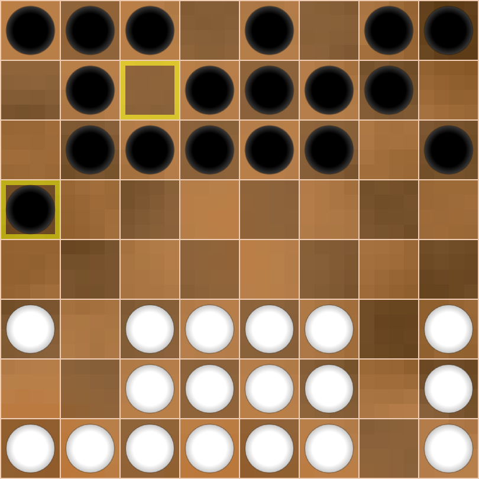
Black’s last two moves look pretentious and eccentric. However, this does not mean that I underestimated my opponent. On the contrary! Knowing that Ray is a proponent of a clear style, I tried from the very first moves to direct the game in an unusual course, because in Dameo you can afford some freestyles at the beginning of the game. I decided to be more economical with my checker placement. Yes, I could also create my own column on the vertical ‘h’, but it would lead to a completely closed game. Therefore, I planned to limit myself to blocking the line ‘h’ with small forces in order to use the h8 checker in the game. Of course, this was not the best decision, and I understood that. But against Ray, I didn’t want to play ‘normal’ draughts. I will not give any variants at the beginning of the game, but will limit myself to general comments. The time for details will come later.
4.e1g3 g8g6 5.g3h4 e8h5 6.e2c4 b8b5
Diagr. 2 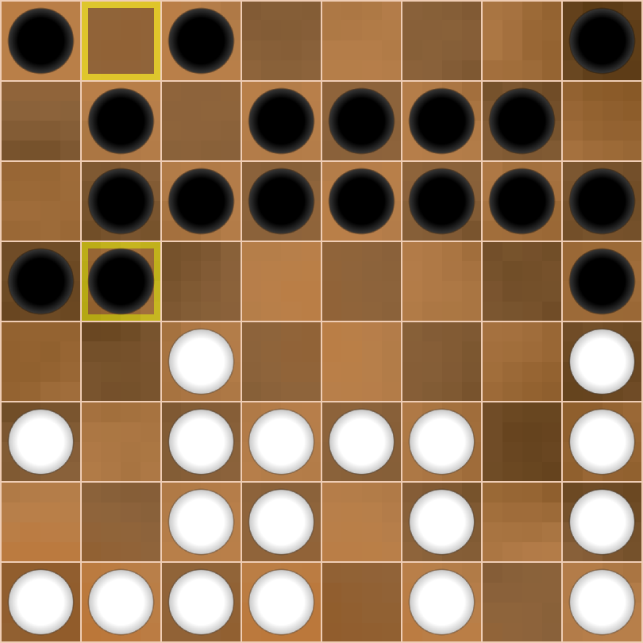
Ray responds to my extravagance with a move that is extremely strange to me, e2c4. It would never have occurred to me to play like that! However, these decisions of the players do not spoil anything yet, but unconventional moves impose additional obligations on us in the middle of the game. The c4 checker makes White’s entire left flank clumsy and disharmonious, so I immediately begin active play there. When I capture point a4, the white checker on c4 will facilitate my invasion of the b4 square. But is this really dangerous for White? I thought so. Ray was convinced it wasn’t.
7.a3b4 b5:b3 8.c3:a3 b7b5 9.b1a2 c6a4
Diagr. 3 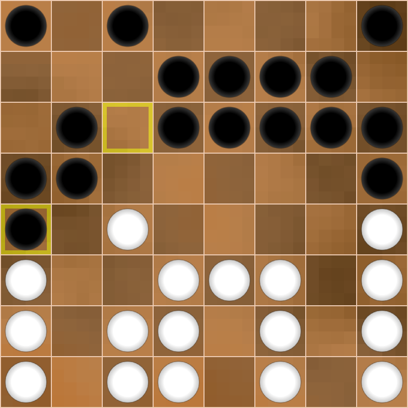
Black has marked its intentions on the flank, trying to develop the initiative there and grab space. However, White’s position is quite reliable and some passivity is deceptive…
10.e3d4 b6b4 11.a2b3 b4:b2 12.c2:a2 e7c5 13.c4:c6 d6:b6
Diagr. 4 
White’s four vertical columns look unusual, so Ray begins to build a more harmonious structure. Black, in turn, launches an attack on its right flank and also throws the h8 checker into battle. I go for broke again, cutting off all ways back and trying to destroy the strict play of my opponent. To do this, I want to involve all my checkers in the game, counting on the fact that the passivity of the white checkers will sooner or later turn in my favour.
14.f2e3 d7c6 15.f3e4 h8e5 16.d1c2 c8c7
Diagr. 5 
It seems the battle is beginning. My move c8c7 prepares for the strike a5b4 at an opportune moment. But Ray demonstrates a remarkable composure.
17.d2c3 …
Of course, I could play according to plan:
17… e5f4 18.e4:g4 a5b4 19.a3:c5 c6:e2,
but a simple exchange
20.f1f2 e2:g2 21.h2:f2 …
Diagr. 6 
would eliminate the dangers for White and simplify the game. Moreover, the b4 piece is cut off from the main forces and may be surrounded and attacked. I rejected this variant and decided to increase pressure along line ‘b’.
17… b6b4 18.c1d2 b5b3!
Diagr. 7 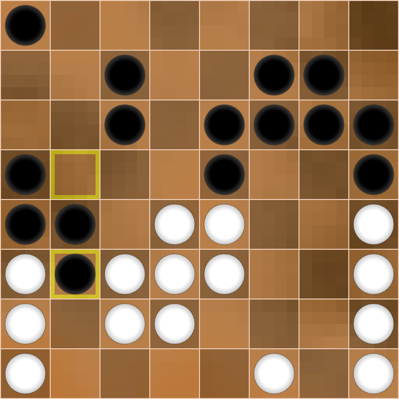
White made its next move quite quickly.
19.d4c5 c6:c4 20.c3:c5 …
Diagr. 8 
Ray sets me a little trap, counting on 20…e6d5?? In this case, after two exchanges, White wins with the move c2c4. I suggest the reader to see this for himself.
More reliable is 20…f7d5, which leads to Black’s initiative, but after 20…f7d5 21.a3:c3 d5:b5 22.a2b3 b4:b2 23.c2:a2 White’s position is fairly solid, and I wasn’t going to break my teeth on it.
I quickly rejected move 20…a5c3, as White has two comfortable capture options with the prospect of later getting the king with material equality.
I considered the move 20…b3b2 for a long time until I discovered a tricky and interesting manoeuvre:
20… b3b2 21.c5c6! c7:c5 22.d2f4 b2:d4 23.e4:c6 …
Diagr. 9 
White gave up a piece, but will soon get a king.
23… f7f5 24.e3d4! f5:f3 25.d4c5 …
Diagr. 10 
Now White can get two kings, and that prospect made me feel bad :).
Let’s return to the main diagram 8.
Diagr. 8
White has one obvious weakness: a loose, unprotected centre. What’s more, Black knows opponent’s next move! Note the piece on e5: it connects White’s centre and has a potential route to the c1 square…
20… g6f5!! 21.a3:c3 b4b3 22.c3:a3 h5g4 23.h4:f4 f5:f3 24.e3:g3 e5:c1
Diagr. 11 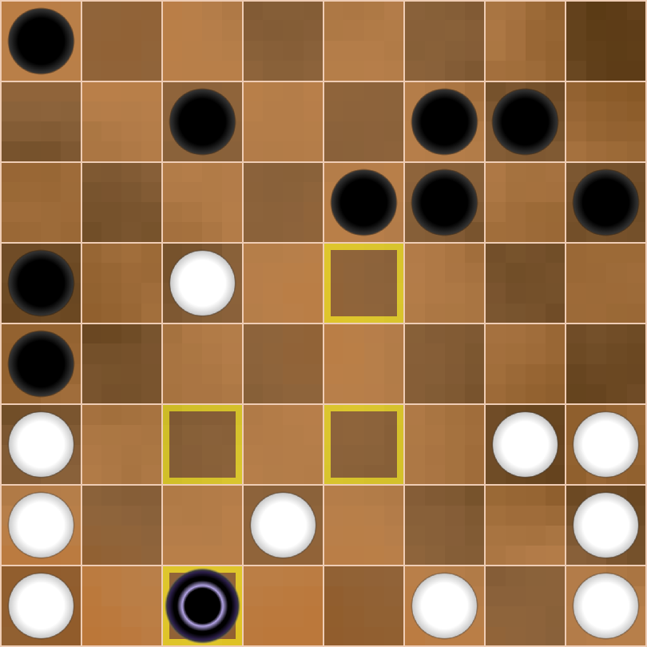
The counterattack on the majority saves White from immediate defeat.
25.c5c6! c1:g6 26.c6:c8 …
Diagr. 12 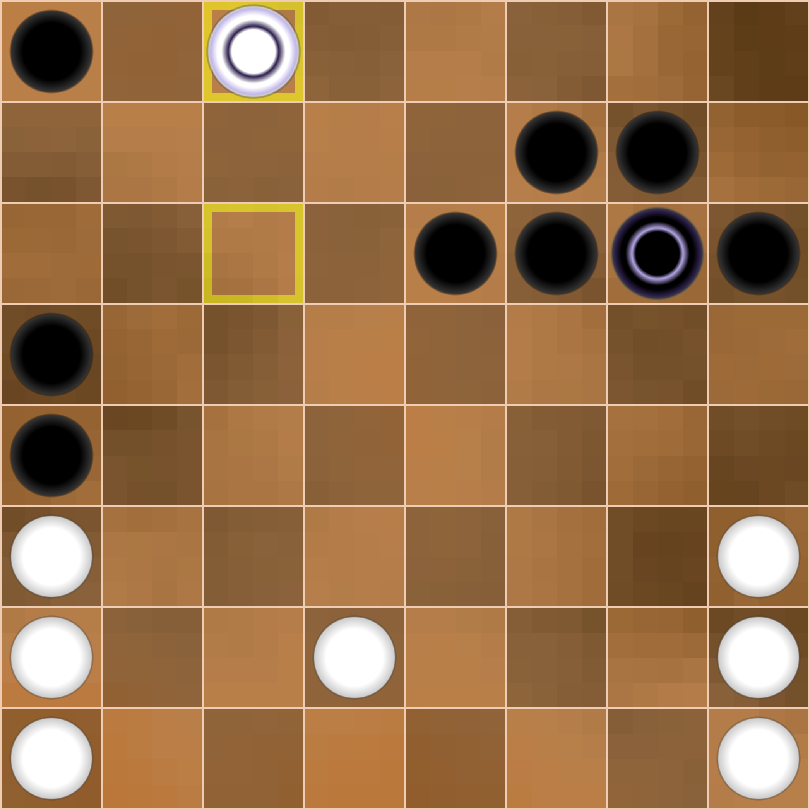
So, Black has won a checker and can now think about a plan to realise its material advantage. The worry didn’t come to me immediately. The euphoria of a successful combination temporarily blinded me. Suddenly, I realised that my king was trapped. Just h3g4 is threatening, and there is no good defence!
In the case of 26…g6e4 27.d2e3! and 28.a3b4, Black is crushed.
Continuation 26…g6f5 27.d2e3! looks a little more persistent, but here too, Black’s king has no peace. Indeed, look:
1.Moving to the vertical ‘g’ is not possible because of h2g3 & a3b4, 2:0.
2.Moving to the squares e5/d5 is also not possible because of the sacrifice of the checker e3 and then a3b4, 2:0.
3.It is also bad to hide on b5 because of c8a6! and then h1h4! with a powerful initiative for White, Black is late with the counterattack and may lose.
Below is an illustrative example:
26… g6f5 27.d2e3! f5b5 28.c8a6! a5:a7 29.a3:c5 a7b6 30.h1h4! h6g5 31.h2h5 …
Diagr. 13 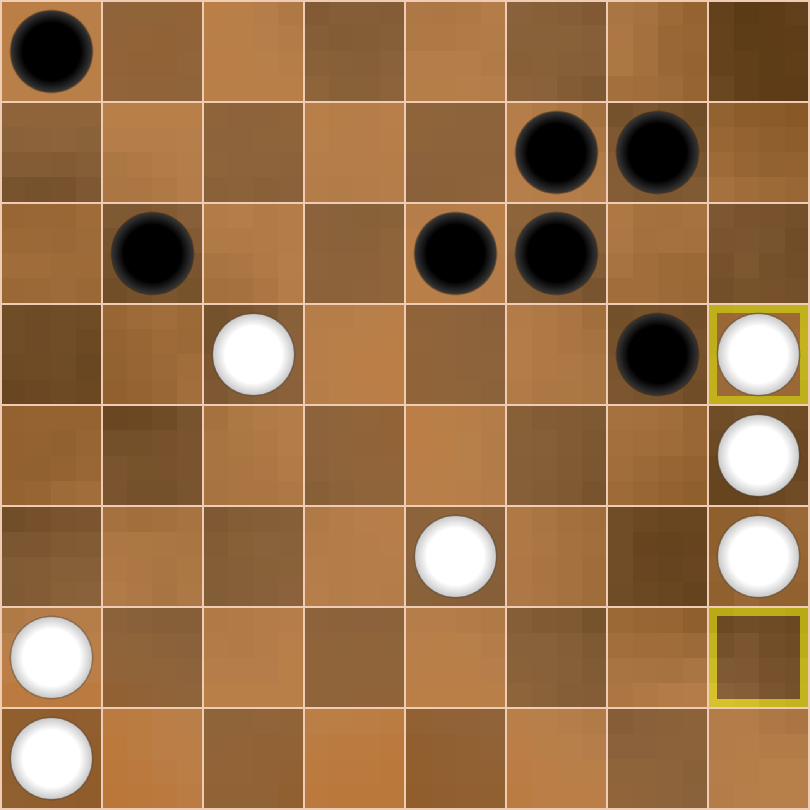
Now it is clear how important it is to protect your edge verticals from intrusion. In the case of an exchange on square f5, the black checker lands on square f4 and is captured after h3g4, and White wins. However, Black can set a trap!
31… g5f4!
Now 32.h3g4?? f7f5! 33.g4:e4 e6g4 34.h4:f4 f5:d3 is incorrect, and the game turns in Black’s favour.
32.h4h6 f7f5
Now no tricks can save Black.
33.h5h7 e6g4 34.h7:f7 f6:f8
Diagr. 14 
35.h6g7 g4g3 36.h3:f3 f4:f2 37.g7h8 …
Diagr. 15 
Black has tried to maintain material equality until the last moment, but the position favours White in any case. White wins a checker and gets a second king before its opponent.
2:0.
Well… let’s go back to Diagram 12.
Diagr. 12
Intuitively sensing danger, I decided to retreat the king to h7. I didn’t like this move either, because of the response c8h8, and the black king is bound. However, I quickly calculated that with the moves g7g6 & f7h5, I would block the ‘h’ line and free my king.
26… g6h7 27.c8h8 g7g6 28.h2h4 f7h5
Diagr. 16 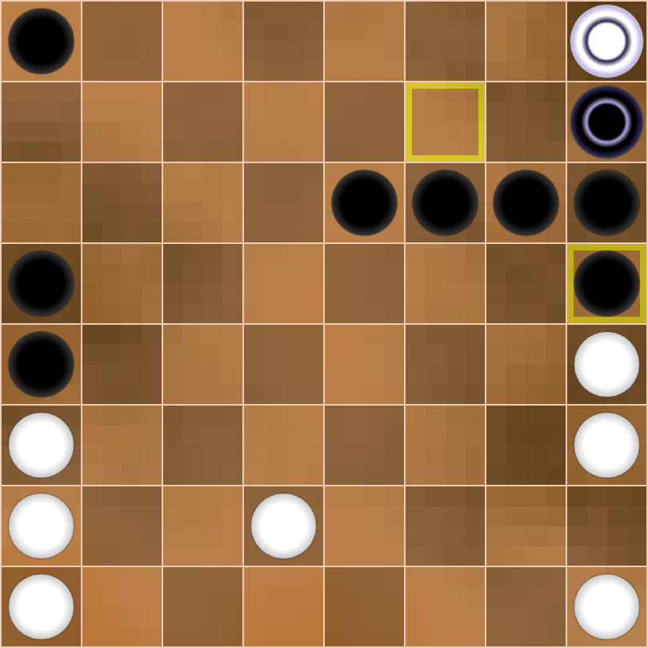
It seemed that Black had managed to avoid trouble and consolidate its position, but Ray saw one step ahead!
29.h3g4!! h5:h3 30.g4h5 h6:h4 31.h8:h6 …
Diagr. 17 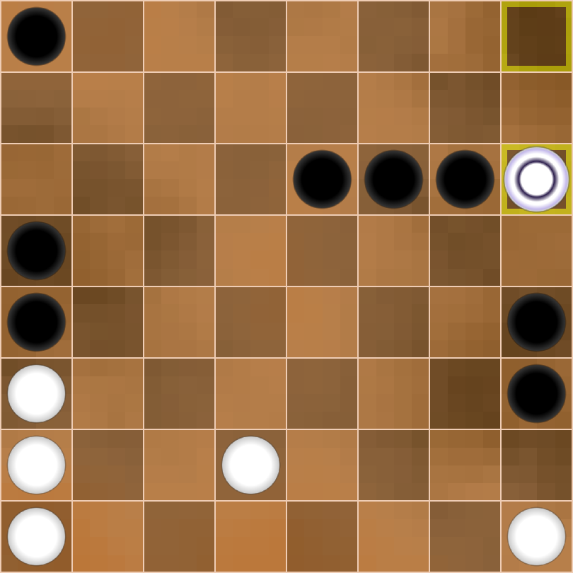
Ray has finally broken through Black’s defences! Just recently, I was looking for a win, but now I am forced to fight against the white king, not knowing how it will turn out! He is now threatening h1g2 with the blasting of the h3-h4 pair, so Black’s response is forced.
31… g6h5 32.h6f8 e6f5 33.d2e3 h3h2 34.h1:h3 h4:h2
Diagr. 18 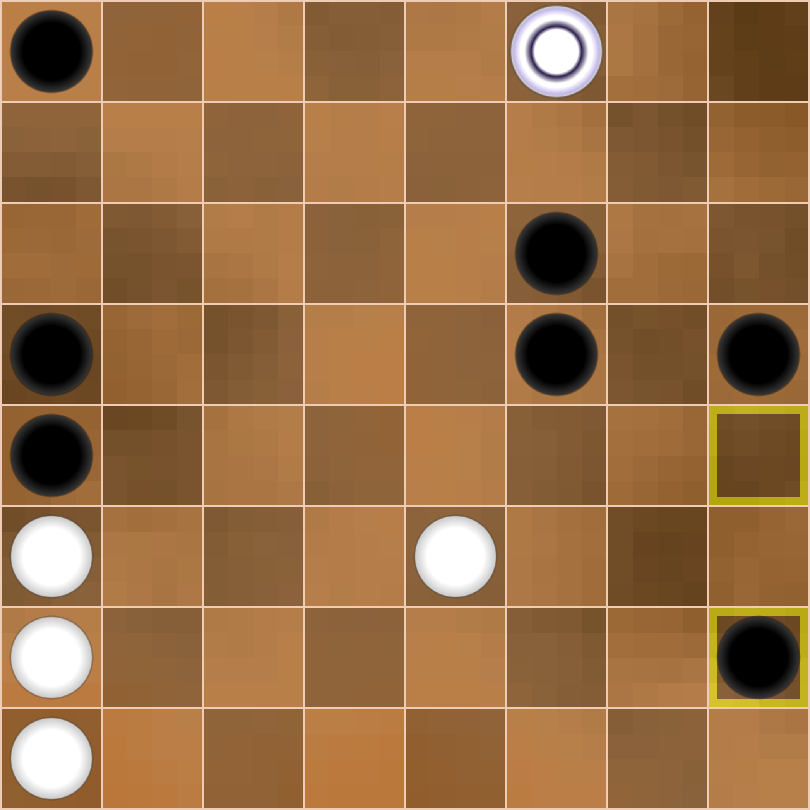
At this point, I believed I was already winning, because 35.e3f4, as well as 35.a3b4 a4:c4 36.e3f4 f5:f3 37.f8:a6 (it is not possible to capture the f6 piece twice) does not save White.
But White’s next maneuver stunned me:
35.a3b4 a4:c4 36.f8h8!! …
Diagr. 19 
This subtle move, which I didn’t see, saves White. I was still looking for a win, but there isn’t one anymore. Black has three responses: h5g4, c4d3, and h2h1.
I abandoned the move h5g4 because I lost my main hope - the h2 checker. Black will be forced to break through on White’s right flank, opening the way for the e3 checker, which has a good chance of becoming the second king. Perhaps a draw awaited us in this case, but Black would have had no chance of anything more. And I was hoping for a victory!
In the second case, after
36… c4d3 37.h8:h1 d3:f3 38.h1g2 …
Black is forced to sacrifice two pieces in order to get the king. An almost symmetrical position arises, which is also likely to lead to a draw. But I don’t sit down at the board to play for a draw. I dislike opening theory and the high percentage of draws in Chess and Draughts so much that I clung to Dameo as a last resort to avoid all that.
36… h2h1
This risky move does not change the evaluation of the position, but I wanted to continue fighting with the kings and expected to get a second king with the help of the f5 pawn.
37.h8:g6 f5f4 38.g6g2 h1h8
Diagr. 20. 
This position attracted me. I intended to use pressure on the white king to push my checker to the first row.
39.e3d4 f4f3?
This is a very, very heavy mistake and this weak move is already losing. I didn’t immediately realise that I instead needed to organise the move f4g3 and then g3h2. If I managed to do that, the white king would be lost, and Black would have a good chance. White’s task would be to prevent the move f4g3, for example:
39… h8g8! 40.g2h3 g8h8
Then it is easiest for both sides to agree to a draw by repeating moves.
What is wrong with the move f4f3? Answer: the white king can hide in the corner h1 and remain there in complete safety; Black cannot attack it.
This mistake can be explained by the fact that I was playing a dozen other games in parallel in the tournament, so my brain protested :). However, my opponent was in the same situation.
40.d4e5 h8g8 41.g2h1 f3g2 42.e5f6 …
Diagr. 21 
Black’s initiative and pressure came to a standstill.
42… g8h8 43.f6g7 a8b7 44.a2b3 b7a6
Diagr. 22 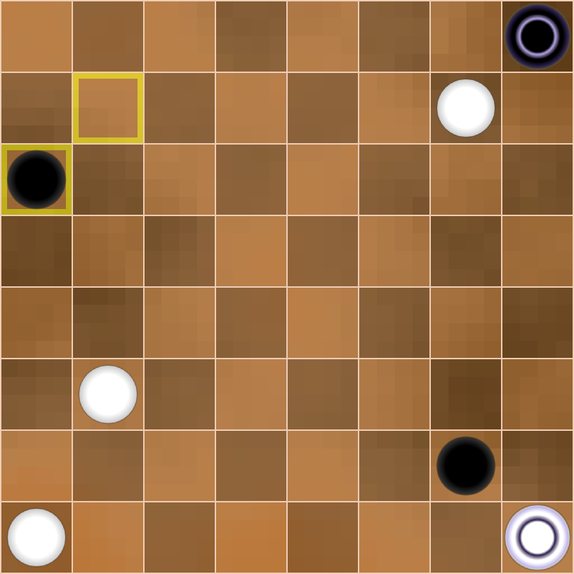
I think we were both very tired by this point. Showing remarkable resilience and composure, Ray fended off all my attempts to win and forced me to making mistakes. How can White win here? Let’s think without counting the variants.
White must reach square b7 with the threat of b7a8. Black cannot respond in kind, as square a1 is occupied. Moreover, the b3 checker is ahead of the a6 checker. White wins.
45.a1b2 …
This move does not spoil anything yet, as White can still prevent black piece a6 from reaching square a1. Ray is simply losing 1 tempo, but victory is still within his hands. But I sensed that my opponent was losing control of the game or thinking he would win no matter what. With a trembling hand, I tried to reproduce my next move on the screen and… I couldn’t! The battery in my mouse had died. It was the end, but I set my last trap.
45… a6b5
Diagr. 23 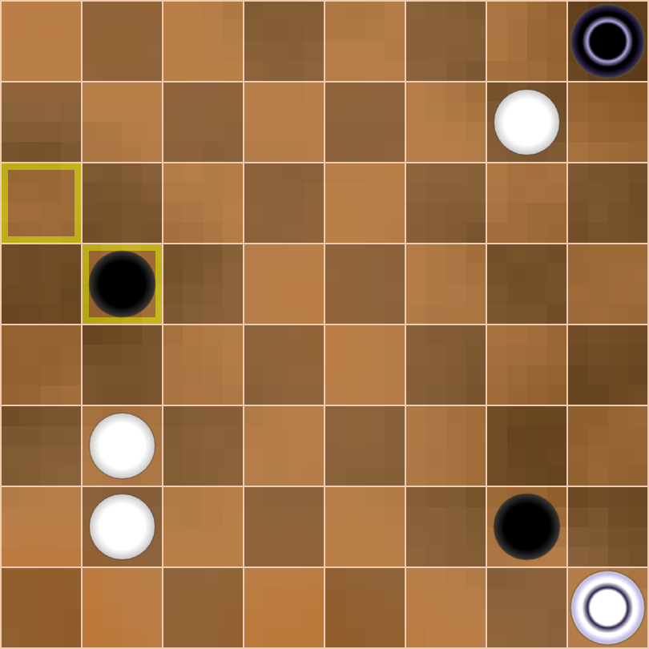
Now move 46.b3a4 was winning, but something incredible happens…
46.b2b4?? …
This move can be explained either by fatigue or by tremendous nervous tension. Remember: never attack your opponent’s checker when there are kings on the board! You give your partner free tempo, and he will take advantage of it. The tired Ray was probably counting on two responses: 46… b5a4? 47.h1g1, 2:0 or 46… h8b8? 47.b4:b6 b8:b2 48.g7g8, winning the g2 piece and with it the game.
But Black has a third answer!
46… h8g8! 47.b4:b6 g8:a6
Diagr. 24 
In Russian, Brazilian and International Draughts, this would be a draw, but in Dameo such endings are won. First, Black gets a second king.
48.h1a1 a6f6
Black takes control of square a1.
49.a1h1 f6a1 50.h1h8 g2h1
Diagr. 25 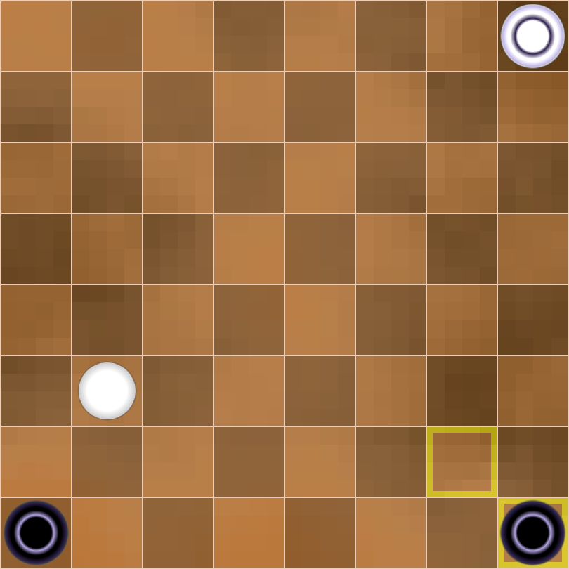
One black king goes to its lower corner (this is the h8 field). Second black king attacks a simple white checker from the rear.
51.h8a8 a1g7
But first, we must get the king a1 out of danger.
52.b3b4 h1h8 53.a8a1 g7b2
Diagr. 26 
In the case of 54.b4a5, the manoeuvre h8h1 & h1a1 wins, because the white king and checker are bound, what leads to the loss of the checker and a 2х1 winning endgame, 0-2. In the case of b4c5, the move h8a8 with the main idea b2c3 wins, the white simple checker dies in any case, see for yourself in your mind.
All this seemed clear enough to Ray, so White resigned.
0:2.
I won’t mind if someone says that I often get lucky in Dameo. Luck is a very capricious and intangible thing, so each of us wants to deserve its favour. Perhaps it likes my style of play. Perhaps I set my opponents many problems, and they can’t withstand such pressure. Sometimes I can’t endure it myself, and then Luck turns away from me because I was weak and undecided in those moments. But it’s impossible to be strong all the time, everywhere, isn’t it? Ray Garrison once again outperformed me, but couldn’t follow through his excellent play.
Well… each of us has our own height, which we are incapable to overcome. Otherwise, we would become gods…
Ray, thank you for the game!